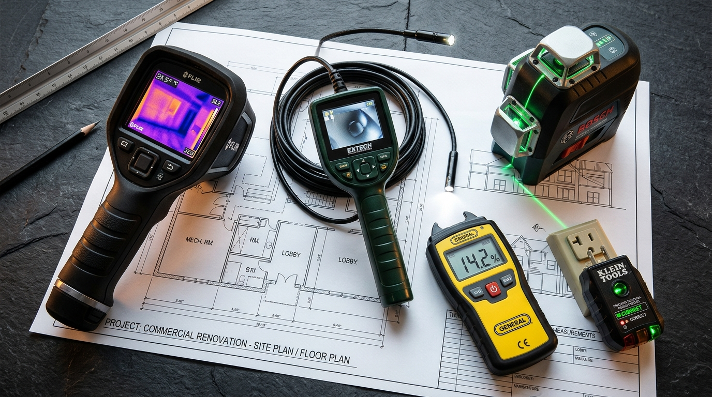
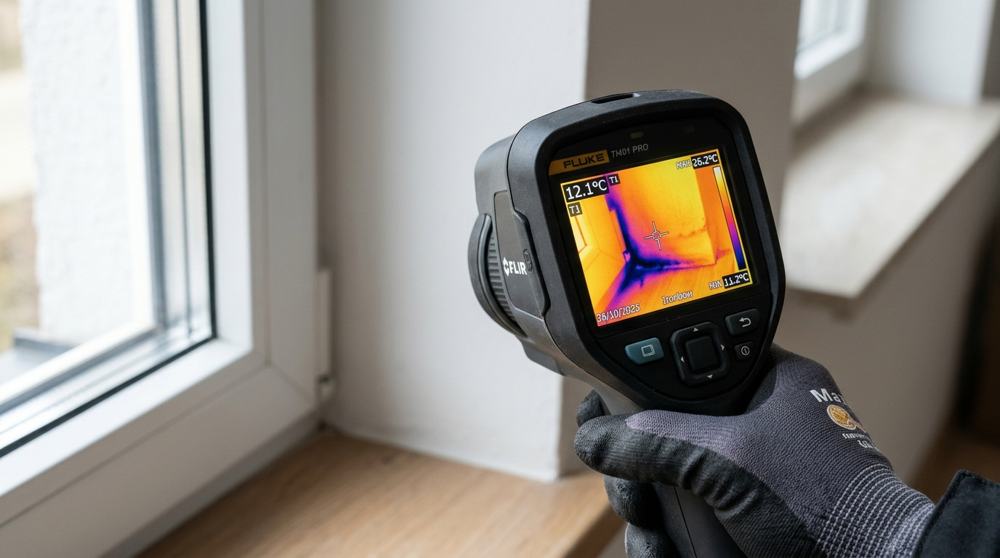

肉眼看不見牆體深層水氣、排水管內水泥淤積與配電箱接地異常。安居科技有限公司斥資引進工業級熱學、光學、電氣與環境感測設備，每一戶皆全套隨隊出勤，將房屋品質轉化為無可辯駁的科學數據。
許多新成屋交屋時遇到晴天，窗框與浴室背牆看似乾爽，入住後第一場颱風豪雨卻開始滲水壁癌。安居科技透過標準化三階段科學驗證，確保不誤判、不漏抓：


部分坊間驗屋公司將「紅外線熱像儀」或「管道內視鏡」列為加價選配項目；安居科技堅持全套儀器皆為每一戶之標準配備，不額外加收任何費用。